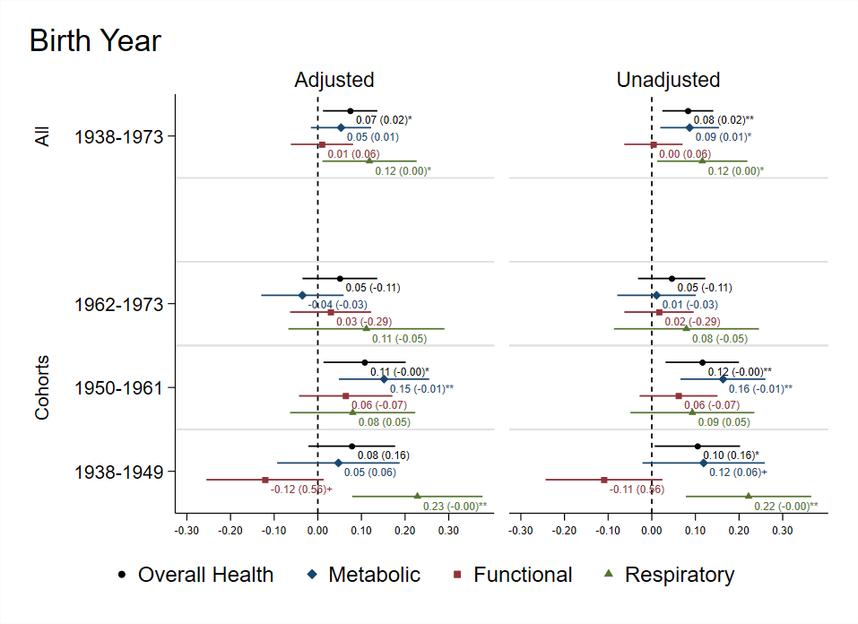

Working Papers
Revise and Resubmit. Proceedings of the National Academy of Sciences
Abstract: The success of large-scale family planning
programs depends on potential long-term benefits for women’s health and economic empowerment. They
are presumed to reduce total pregnancies and family size, which may free up women’s time and
resources. However, few studies have established long-term effects on health. We investigate the
highly influential Matlab Maternal Child Health / Family Planning quasi-experiment effects on
lifetime fertility and multiple dimensions of health 35 years after introduction of services. For
cohorts of women defined by age at program initiation, using baseline and follow-up survey data, we
find the program led to fewer children but few significant effects on health or economic production
with one exception: women born 1950-1961, who experienced the largest MCH/FP effects on
contraception and childbearing, have significantly poorer metabolic and functional health. Despite
strong arguments in favor of long-term benefits, we observe no positive effects of this family
planning program on long-term health.

Figure Title
Description of figure and how it summarizes the paper's finding
Abstract: We estimate the effect on the social, emotional
and
academic development of youth who were assigned a mentor of the same race relative to those assigned
a
mentor of a different race. Using variation in the relative shortage of minority mentors within the
universe of Big Brothers Big Sisters matches, we find that on average youth in same-race mentoring
relationships had no significant improvements compared to those in cross-race matches. However,
Black
and Hispanic youth who were assigned a same-race mentor had slightly higher self-perceived school
ability and improved attitudes concerning risky behaviors. In contrast to previous work, we find
little
evidence that race-matching improves grades or expectations for future educational attainment. These
results imply that when minority mentors are in short supply, matching on race at the expense of
another
desirable trait may not lead to improved youth development.

Figure Title
Description of figure and how it summarizes the paper's finding